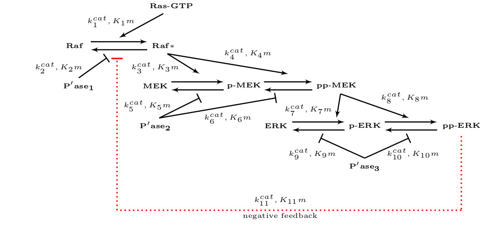
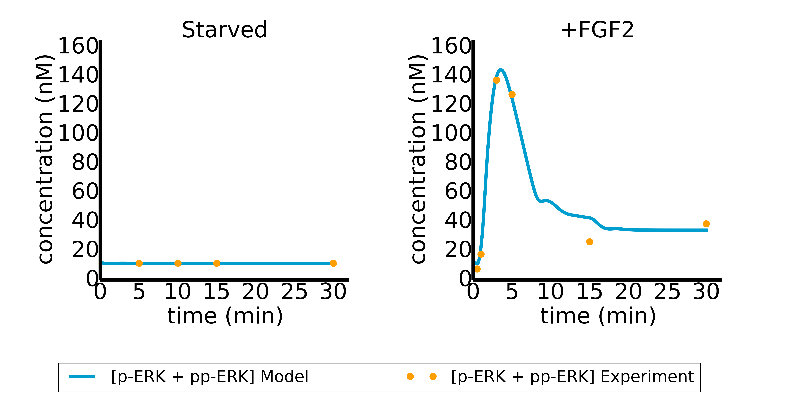
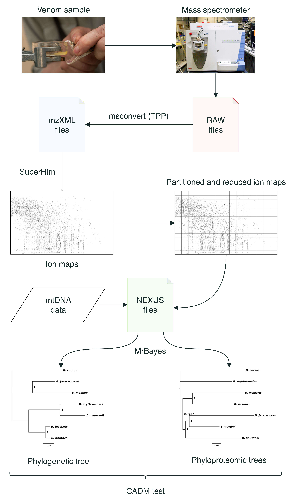

Welcome!
The Dynamic Systems Biology Group, leaded by Marcelo S. Reis and hosted at Butantan Institute, has as a main goal the development of cutting-edge Bayesian Model Selection and Machine Learning techniques and their application into the modeling of biological systems, with emphasis to their underlying dynamic mechanisms. Currently, we are focused on three types of problems: the modeling of cell signaling pathways in the context of cancer biology; the deciphering of the DNA replication dynamics in trypanosomatids; the inference of phyloproteomic trees (cladograms) from mass spectrometry (MS)-based proteomic assays.Modeling of cell signaling pathways in the context of cancer biology


Deciphering of the DNA replication dynamics in trypanosomatids

Inference of phyloproteomic trees from MS-based proteomic assays
If you became interested in one of those research lines, please check it out at the Projects and Sofware page to know about the projects that are being carried out by our group, as well as the in-house software that we develop to tackle them. Feel free to contact us for any question or inquiry about opportunities at our group.